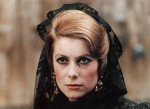
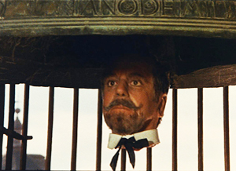
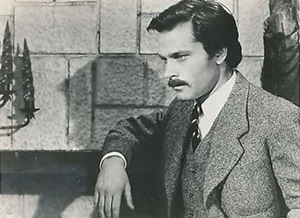
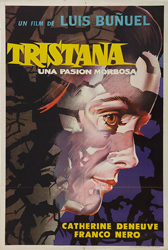
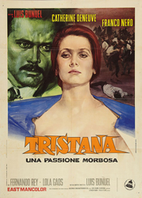
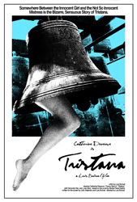
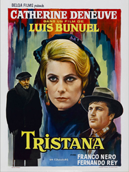
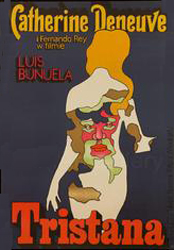

Catherine Deneuve - Tristana
Fernando Rey - Don Lope


Franco Nero - Horacio
Armanda
Don Ambrosio
Bellringer
The story is set in the late 1920s to early 1930s. Tristana is a young woman who, following the death of her mother, becomes a ward of nobleman Don Lope Garrido. Don Lope falls in love with her and thus treats her as wife as well as daughter from the age of 19. But, by age 21 Tristana starts finding her voice, to demand to study music, art and other subjects with which she wishes to become independent, chafing under Lope, who thinks women are untrustworthy and should be kept at home. She meets the young artist Horacio Díaz, falls in love, and eventually leaves Toledo to live with him. When she falls ill, she returns to Don Lope. The illness results in her losing a leg, which changes her prospects; here, the film substantially varies from the novel. Don Lope inherits money from his sister, Tristana eventually marries him, and, when Don Lope is ill, Tristana finishes him off by feigning calling the doctor and opening the window to the winter cold.




